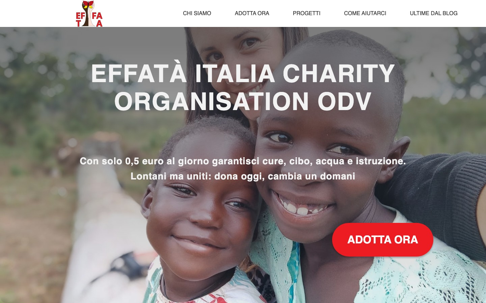
Effata Italia
Sito istituzionale per un'organizzazione ODV. Tema WordPress custom con palette brandizzata, template multipli, newsletter integrata e pagina 5×1000.
Web Developer · In continua crescita
Web developer in formazione con la passione per il codice pulito e le interfacce intuitive.
Ho iniziato il mio percorso con il corso di Web Design di Veneto Formazione e ora sto frequentando il Corso Biennale
all' ITS Digital Academy Mario Volpato
per Tecnico Superiore Sviluppatore Software.
Credo che la condivisione sia la chiave dell'apprendimento: per questo ho creato questo spazio
dove mostro il mio percorso e condivido materiale utile per aspiranti developer.
Quando non codifico, mi trovi sui sentieri di montagna,
immerso nella musica o con un buon libro tra le mani.

Sito istituzionale per un'organizzazione ODV. Tema WordPress custom con palette brandizzata, template multipli, newsletter integrata e pagina 5×1000.
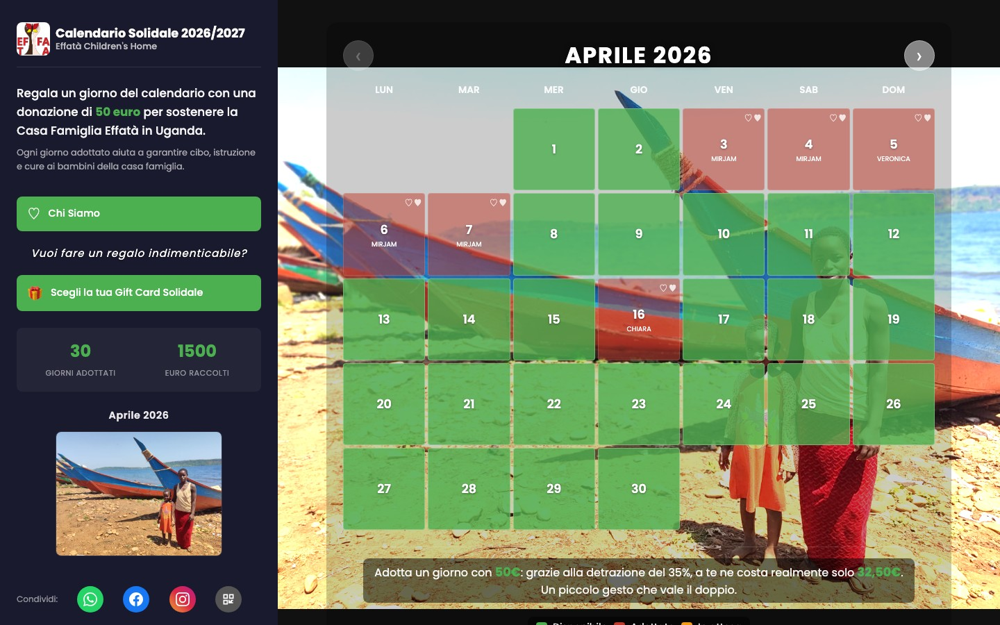
Web app per raccolta fondi: ogni utente adotta un giorno del calendario con una donazione di 50€. Pagamenti integrati, backend Node.js, database SQLite. Deploy su Railway.
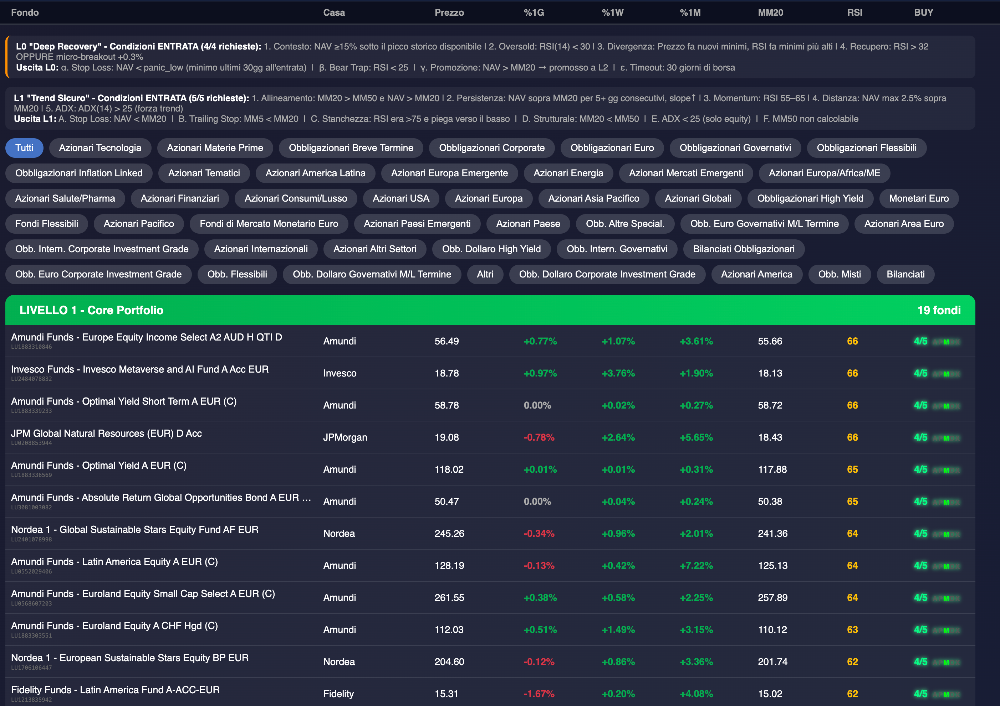
Dashboard per il monitoraggio di fondi di investimento. Filtri per settore e area geografica, indicatori tecnici RSI/MACD/EMA e segnali di acquisto in tempo reale.
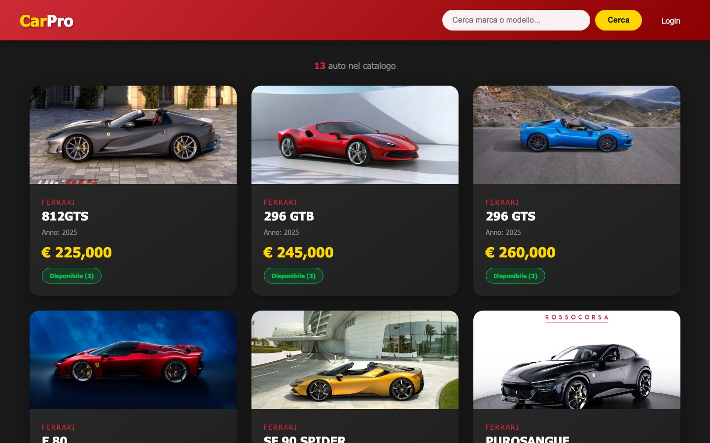
Gestionale auto con catalogo veicoli, ricerca per marca e modello, gestione disponibilità e login admin. Sviluppato in Java con Servlet e deploy su Railway.
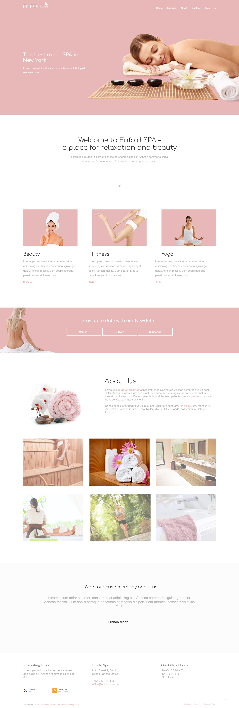
Bozza Figma per un sito di centro benessere. Layout con hero, sezioni servizi (Beauty, Fitness, Yoga), newsletter, galleria e testimonial. Realizzato durante il corso Veneto Formazione.
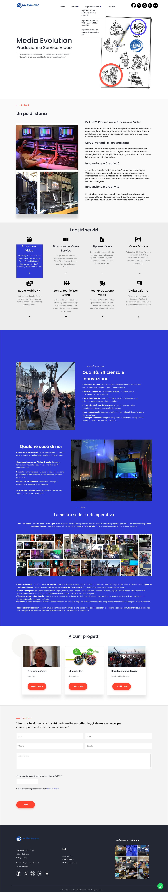
Bozza Figma per un'agenzia di produzioni e servizi video. Layout con hero, sezione servizi, portfolio progetti, sede operativa e form contatti. Realizzato durante il corso Veneto Formazione.

Bozza Figma per una concessionaria auto multimarca. Layout con hero vettura in evidenza, catalogo modelli, sezione officina, finanziamenti e mappa sede. Realizzato durante il corso Veneto Formazione.
Bozza Figma per un sito di personal branding / beauty. Layout elegante con sezione "About my story", portfolio e contatti. Realizzato durante il corso Veneto Formazione.
Il mio archivio di esercizi su GitHub, organizzato per argomento e difficoltà crescente. Clicca una tappa per esplorare i repo.
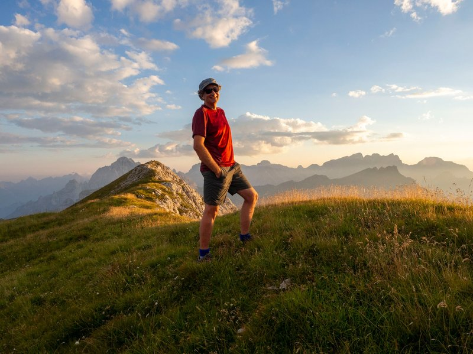
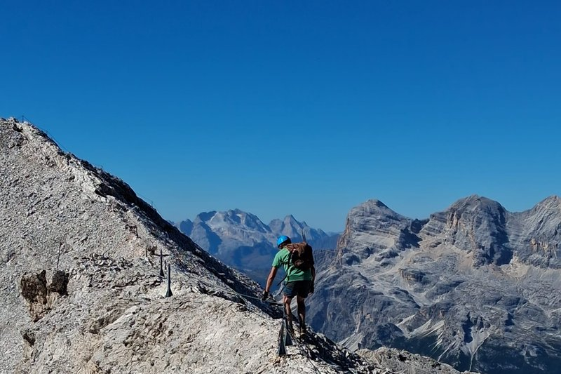
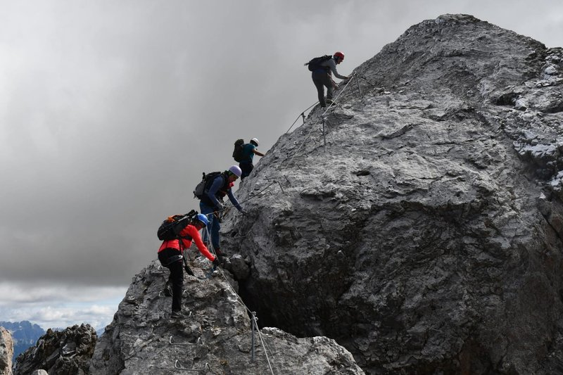
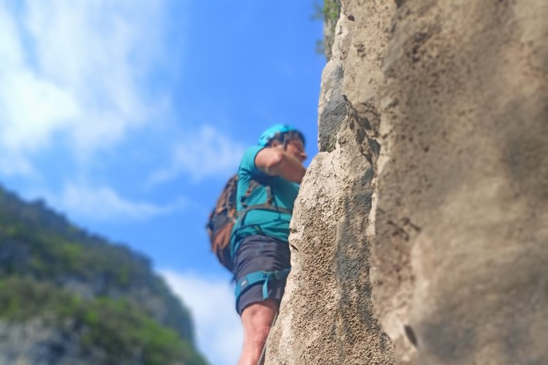
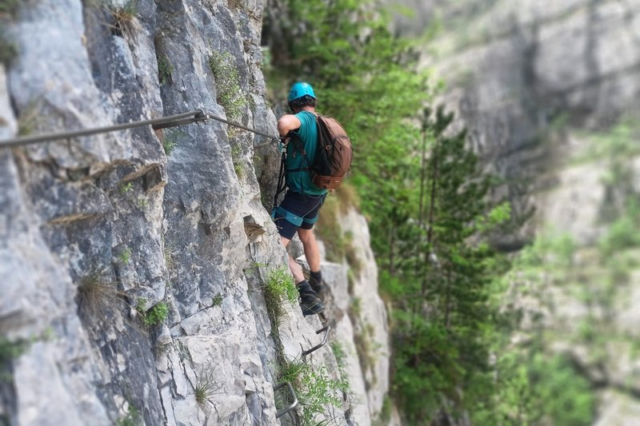
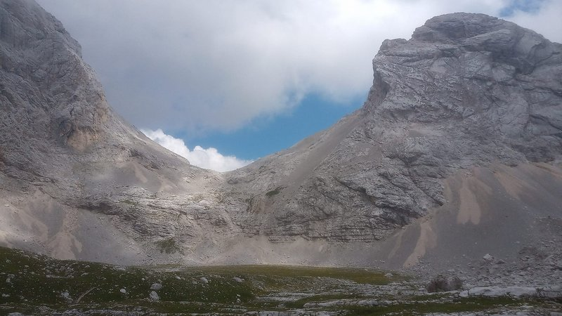
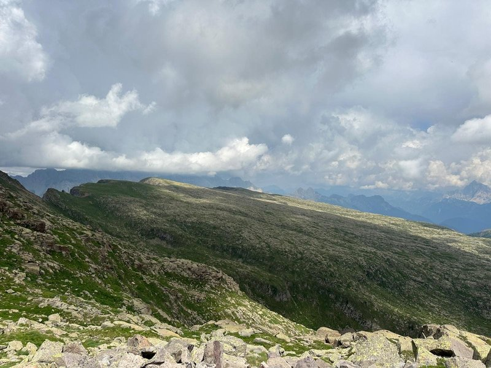
I sentieri mi insegnano pazienza e determinazione. Ogni vetta raggiunta è una metafora del coding: un passo alla volta, senza fretta.
🏔️ L'Etica della Parete, il Rigore del Codice
Sulle tracce di Walter Bonatti, tra Dolomiti e algoritmi
"La montagna mi ha insegnato a non barare, a essere vero con me stesso e con quello che facevo. Se andavo fuori strada, non potevo dare la colpa a nessuno, ero io che avevo sbagliato. In montagna, come nella vita, non ci sono scuse: o sei capace di superare l'ostacolo o devi avere il coraggio di tornare indietro e ricominciare." — Walter Bonatti
C'è un legame invisibile ma d'acciaio che unisce il silenzio delle grandi pareti dolomitiche alla solitudine di una sessione di coding notturna. È un legame fatto di onestà intellettuale. Come scriveva Bonatti, la montagna è un giudice severo: non accetta scorciatoie e non perdona la mancanza di preparazione.
L'alpinismo mi ha regalato il dono della pazienza metodica. Affrontare una ferrata impegnativa o un trekking di più giorni mi ha insegnato a gestire lo sforzo, a respirare nel momento critico e a capire che la "vetta" — che sia il rilascio di un software o una cima a tremila metri — è solo la logica conseguenza di mille passi fatti con attenzione.
Dalle Dolomiti ho imparato il rispetto per il limite e la bellezza del rigore. Fotografo i paesaggi outdoor non solo per catturarne l'estetica, ma per ricordare a me stesso che, dietro ogni visione grandiosa, c'è stata una salita faticosa. Coding e montagna sono per me due facce della stessa medaglia: la ricerca costante di una soluzione pulita, di una via logica, di un orizzonte sempre più vasto da cui guardare il mondo.


Non una semplice raccolta, ma il mio percorso di evoluzione musicale e umana. Ogni brano è una tappa, una scoperta, un cambiamento di prospettiva.
LE RADICI (Il Sociale) — Dove tutto è iniziato. La scoperta della canzone d'autore come strumento di cronaca, sensibilità e denuncia sociale.
LA LOTTA (L'America) — Il grido di giustizia e la forza della narrazione americana: una ballata cinematografica che insegna il potere delle parole.
L'EVOLUZIONE (Il Rock) — L'incontro con il Progressive e le architetture rock più complesse, dove la tecnica incontra l'energia.
L'OSCURITÀ (L'Università) — Le atmosfere ipnotiche e post-punk degli anni universitari. La musica che diventa introspezione e ambiente.
L'URLO (La Generazione) — Il manifesto di un'epoca. La bellezza della vulnerabilità e del sentirsi fuori posto.
L'IDENTITÀ DIGITALE (La Riflessione) — Il paradosso moderno: migliaia di connessioni digitali e la ricerca di un contatto umano autentico.
IL PRESENTE (L'Oggi) — L'urgenza del rock contemporaneo. Il battito di oggi che chiude il cerchio, tornando a una poesia elettrica e vitale.
Clicca sulla cover e viaggia attraverso queste pillole musicali.
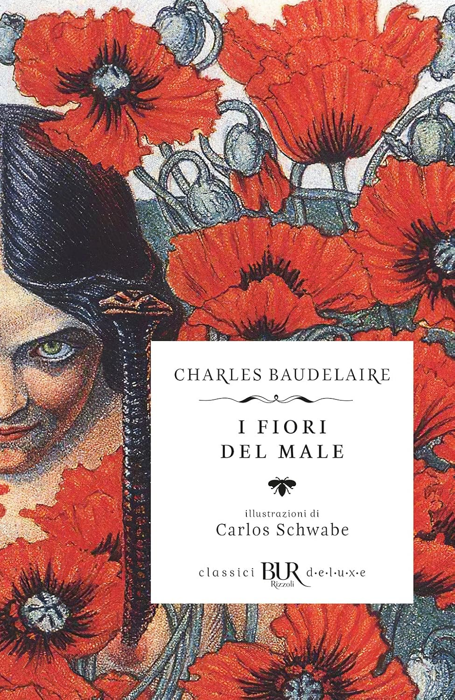
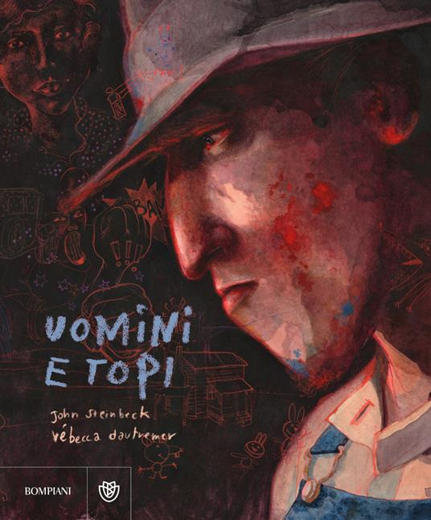
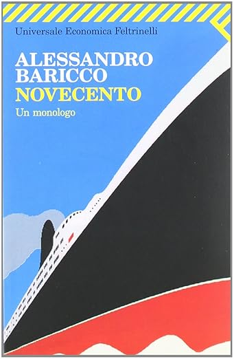
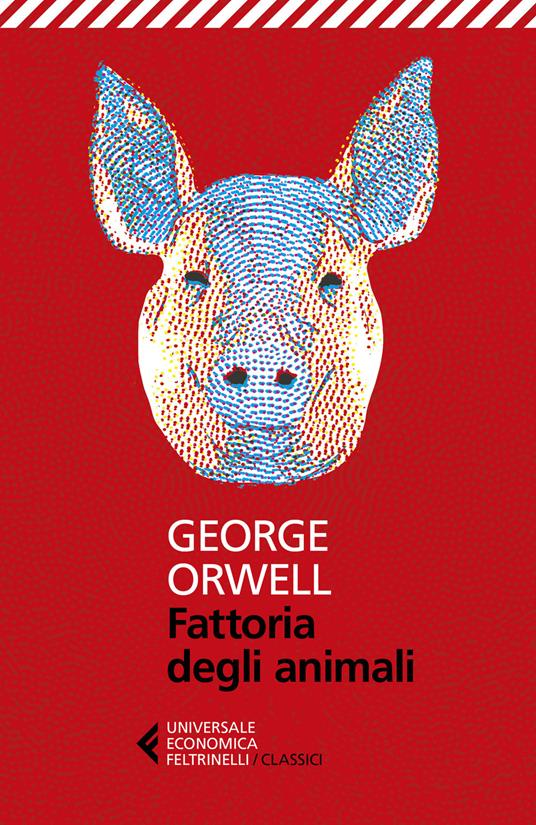
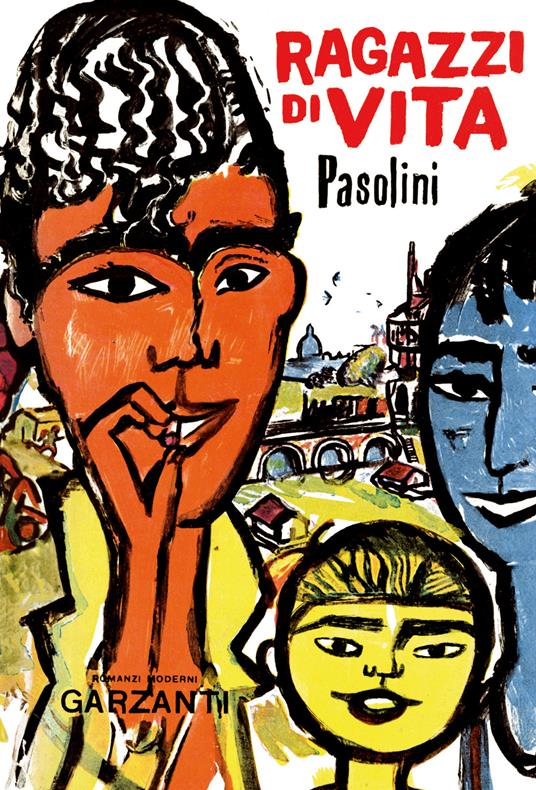
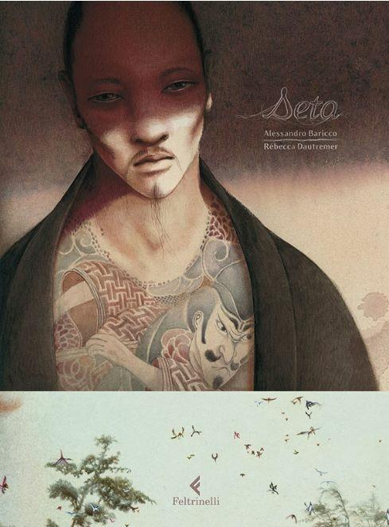
Poesia, narrativa, teatro. Letture che hanno lasciato il segno.
Dal Mediterraneo all'Argentina. Esperienze che mi hanno cambiato.
Cerco opportunità come junior developer. Sono aperto a collaborazioni, stage, o anche solo a scambiare due chiacchiere sul codice.